Lobby, Nu.D38 showcase, İstanbul geo-prototype, hangar mood ve VR test ekranları
Nu.D38 FBX/Blend kaynakları, kokpit/aviyonik ve Nuri karakter çalışma dosyaları
Ambiyans, Yeşilköy başlangıç, Bakırköy waypoint, Süleymaniye, Dolmabahçe ve Beşiktaş varış sesleri
Senaryo notları, İstanbul GIS yol haritası, ses atmosfer planı ve Nuri Demirağ karakter briefi
Materyal türleri ve kaynaklar hakkında
Bu arşivdeki görseller Unreal sahnelerinden, pitch deck render setlerinden, editör ekran görüntülerinden ve proje kaynak klasörlerinden dışa aktarılmıştır. Ses dosyaları proje içindeki mevcut kaynak seslerden web uyumlu M4A formatına çevrilmiştir. Ham Unreal varlıkları doğrudan yayınlanmak yerine görsel, video, ses, PDF ve dış bağlantı üzerinden paylaşılan model paketi olarak sunulur.
01
Video Kayıtları
Unreal/modelleme ekran çıktıları ile AI destekli arşiv restorasyonu ve görsel dünya denemelerinden seçilen kısa MP4 kayıtları projenin mevcut prototip evresini hızlıca okunur hale getirir.
Nu.D38 Unreal Süreç Kaydı
Lobby sahnesi, arşiv köşesi, İstanbul geo-prototype, rota, uçuş hissi, modelleme profili ve kokpit blockout ekranlarından oluşturulmuş süreç videosu.
- Süre
- 27.97 sn
- Kaynak
- Saved / PitchDeckShots / PitchDeckShots_Ready
Nu.D38 Model Stüdyo Dönüşü
Nu.D38 uçak modelinin stüdyo render setinden hazırlanmış kısa model inceleme videosu; profil, burun, kanat, üst görünüş ve wireframe süreç görüntüsünü içerir.
- Süre
- 21.57 sn
- Kaynak
- Saved / PitchDeckShots / PitchDeckStudio_Ready
AI Destekli Arşiv Restorasyonu 01
Nuri Demirağ, uçak gövdesi ve dönem atmosferi üzerine üretilmiş kısa image-to-video denemesi. Tarihsel belge değil, restorasyon/görselleştirme araştırması olarak sunulur.
- Süre
- 5.06 sn
- Kaynak
- Kling image-to-video çıktısı
AI Destekli Arşiv Restorasyonu 02
Hangar içi uçak ve üretim atmosferini canlandıran kısa video denemesi. Projenin arşiv restorasyonu ve görsel hafıza araştırması hattını gösterir.
- Süre
- 5.06 sn
- Kaynak
- Kling image-to-video çıktısı
AI Destekli Arşiv Restorasyonu 03
Nu.D hangarı, tören/üretim çevresi ve uçak gövdesi ilişkisini deneyen kısa video. Dönem hissi ve sahne kompozisyonu araştırması olarak kullanılır.
- Süre
- 5.06 sn
- Kaynak
- Kling image-to-video çıktısı
Görsel Dünya Video Denemesi
Kurucu figür, kalabalık, uçak ve tören atmosferi üzerine üretilmiş kısa görsel dünya denemesi. Karakter ve sahne tonu için referans niteliğindedir.
- Süre
- 5.06 sn
- Kaynak
- Kling image-to-video çıktısı
02
Prototipler
NuD Unreal projesindeki çalışan sahne, pawn, kokpit ve uçak modeli varlıkları; editör ekranları ve kaynak paketleriyle belgelenmiştir.
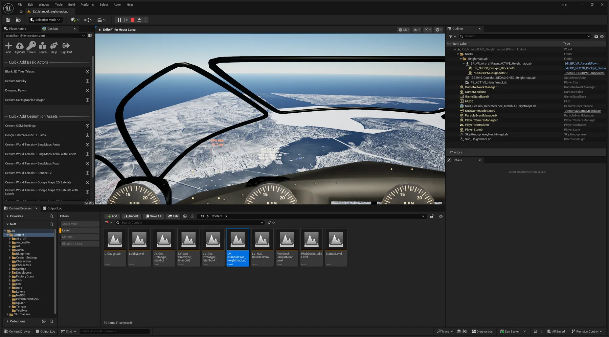
MevcutVR Kokpit ve Coğrafya Testi
WindowsEditor screenshot klasöründeki mevcut Unreal editör ekranı; kokpit görüşü, terrain ve VR test bağlamını birlikte gösterir.
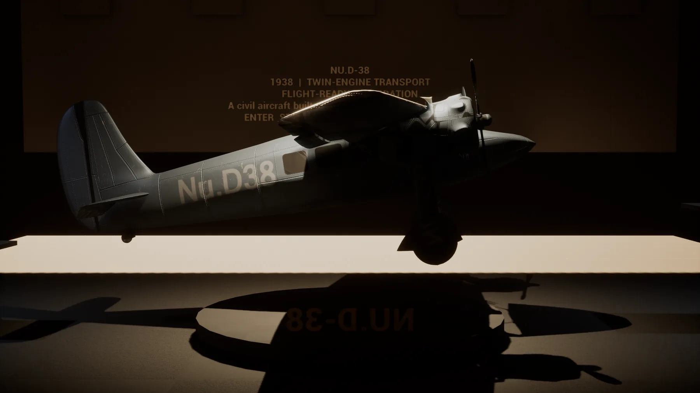
MevcutLobby / Showcase Sahnesi
Nu.D38 uçak modelinin deneyim girişinde ve arşiv mekânında sergilendiği Unreal sahne çıktısı.
Model ve Kaynak Paketleri
Blender kaynakları, FBX dışa aktarımları, Nuri karakter çalışma dosyası, Yeşilköy ve aviyonik kaynakları ayrı bir model paketi bağlantısı üzerinden sunulmuştur.
Model paketini Drive’da aç03
Uçak, Kokpit ve Dijital Rekonstrüksiyon
Nu.D38 uçak modeli, kokpit blockout, aviyonik kaynakları ve render edilmiş geliştirme görüntüleriyle mevcut rekonstrüksiyon sürecini görünür kılar.
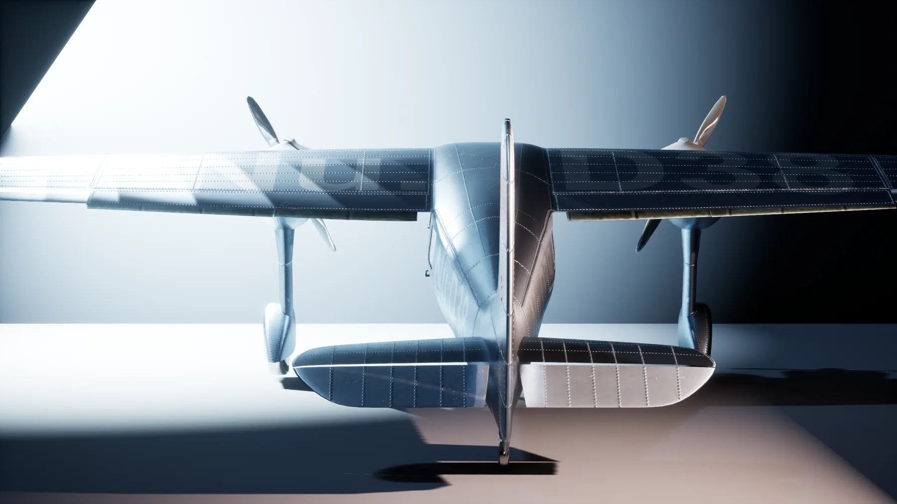
MevcutNu.D38 Dış Model Profili
Unreal pitch deck stüdyo sahnesinden dışa aktarılmış profil görüntüsü; gövde oranı, kanat açıklığı ve kuyruk formunu gösterir.
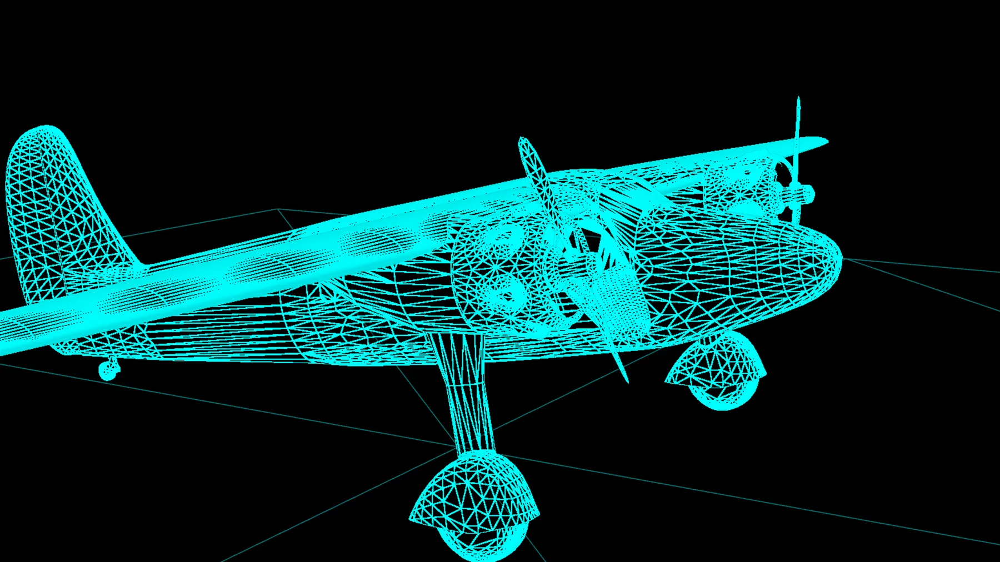
MevcutWireframe ve Model Süreci
Uçağın yüzey ve form üretimini belgeleyen wireframe süreç renderı.
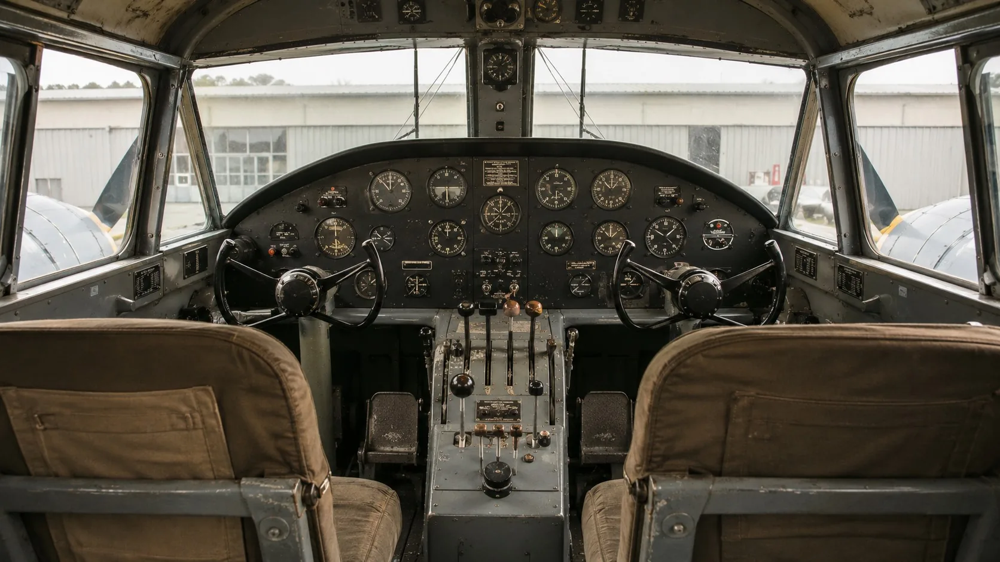
MevcutKokpit İç Mekân Referansı
Kokpit atmosferi, gösterge paneli, bakış açısı ve VR ölçek araştırması için kullanılan çalışma görseli.
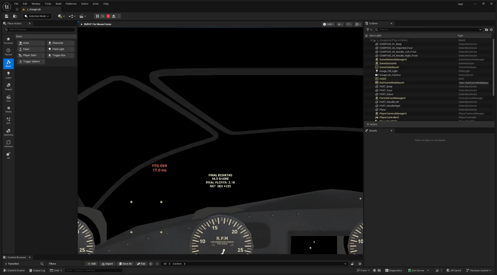
MevcutKokpit Editör Çalışması
Unreal editöründe kokpit blockout ve yerleşim çalışmasını belgeleyen ekran görüntüsü.
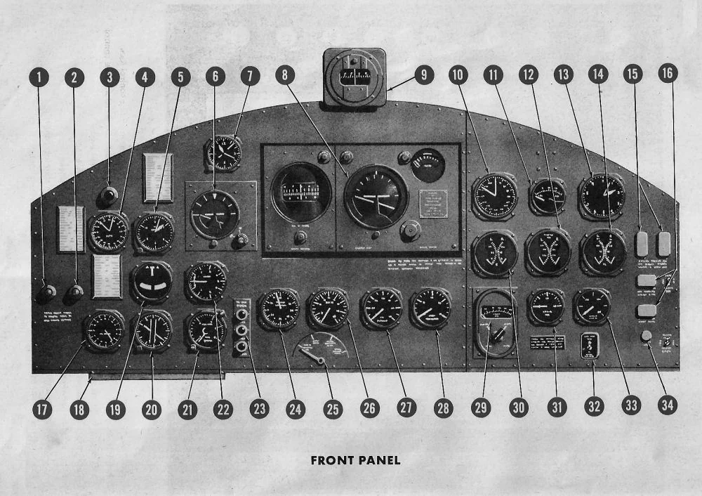
MevcutMuadil Kokpit Enstrümanları
C-47 ön panel referansı, Nu.D38 kokpitindeki dönemsel gösterge, panel yoğunluğu ve analog enstrüman mantığını karşılaştırmak için kullanılır. Birebir Nu.D38 belgesi olarak sunulmaz.
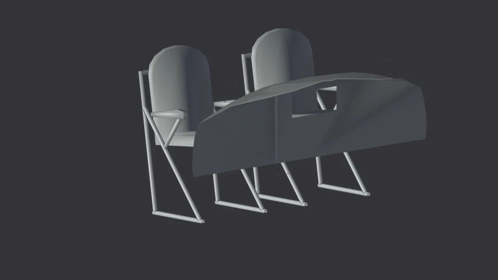
MevcutKokpit Strüktür Blockout
Temiz kokpit strüktürü ve ölçek yerleşimi için kullanılan erken modelleme çıktısı.
04
Haritalar, Topoğrafya ve Tarihsel İstanbul
İstanbul geo-prototype sahnesi, terrain, rota ve uçuş koridoru çalışmalarını mevcut Unreal ekran çıktılarıyla gösterir.
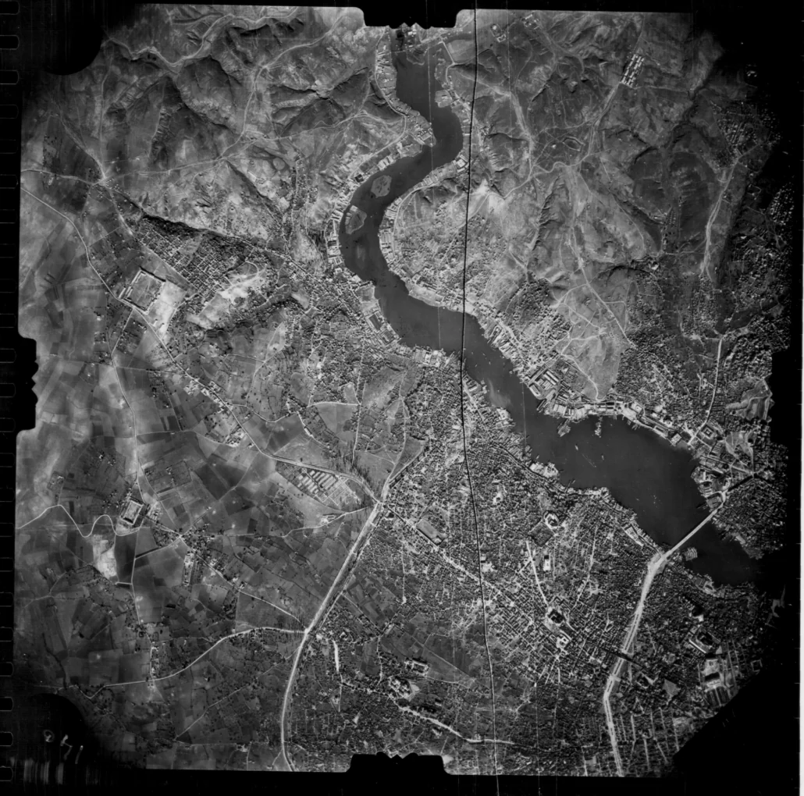
Mevcut1946 İstanbul Hava Fotoğrafı
Tarihsel İstanbul katmanını, kıyı çizgisini, topoğrafik sürekliliği ve uçuş koridoru çevresindeki kent dokusunu değerlendirmek için kullanılan hava fotoğrafı.
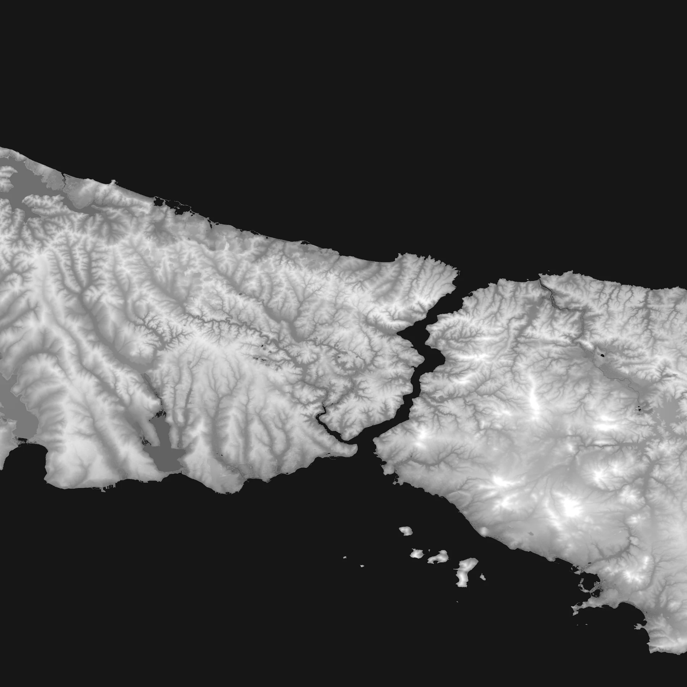
MevcutLandscape Height Map
Unreal terrain ve uçuş yüksekliği testlerinde kullanılacak topoğrafik yüzey bilgisini gösteren landscape height map çalışması.
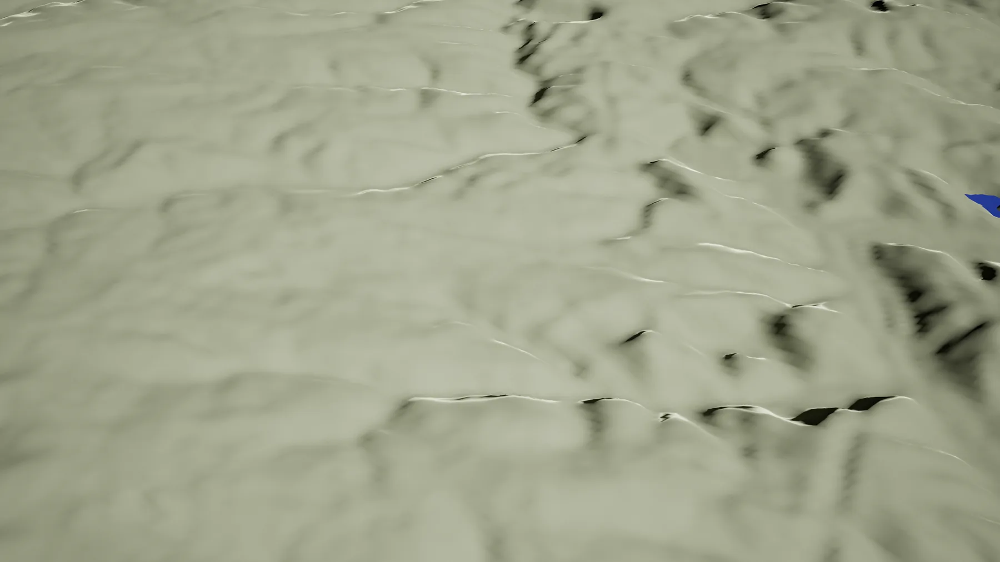
MevcutHeightmap / Terrain Prototipi
İstanbul hattı için yükseklik, arazi ölçeği ve uçuş hissi testlerini taşıyan geo-prototype ekran çıktısı.
05
Ses Kayıtları ve İşitsel Araştırma
Proje kaynak klasörlerindeki ambiyans ve anlatı sesleri web uyumlu M4A dosyalarına dönüştürülmüştür.
Kül Üzerinde Kanatlar - Ambiyans
Proje kaynaklarındaki 60 saniyelik ambiyans/müzik eskizi. Dosya metadatasında üretim aracı ve tarih bilgisi korunmuştur.
Rota ve Landmark Seslendirme Testleri
Yeşilköy başlangıç, Bakırköy waypoint, Süleymaniye, Dolmabahçe ve Beşiktaş varış için kısa anlatı sesleri.
06
Eskizler ve Çalışma Diyagramları
Modelleme süreci, editor yerleşimi ve kokpit/aircraft blockout görselleri; çizim eskizi yerine dijital çalışma diyagramı olarak sunulmuştur.
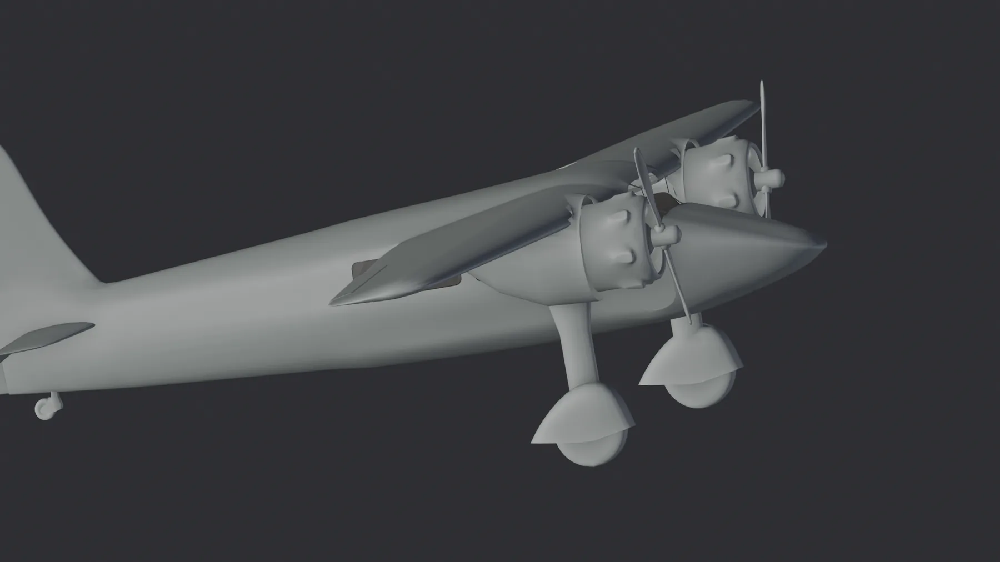
MevcutGerçek Ölçek Uçak Profili
Nu.D38 dış modelinin oran ve profil kararlarını gösteren üretim çıktısı.
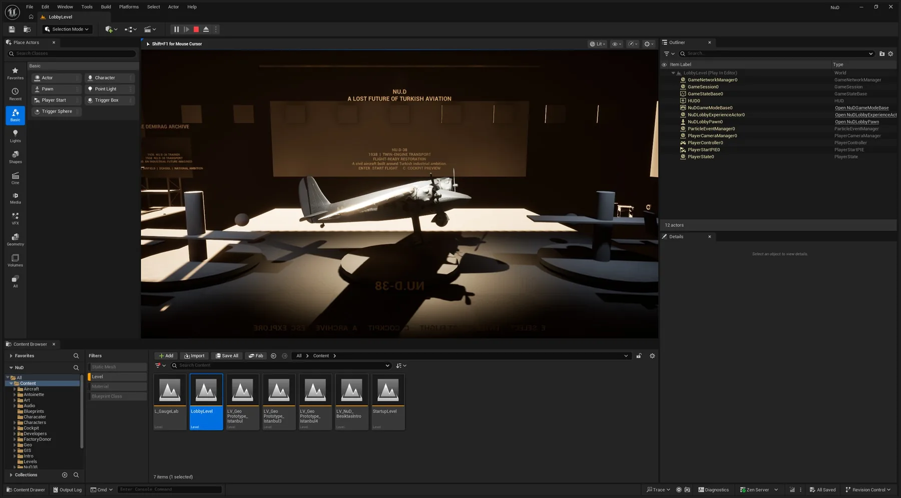
MevcutUnreal Editör - Uçak Yerleşimi
Uçak sahne yerleşimi, ışık ve görünürlük testini belgeleyen editör ekranı.
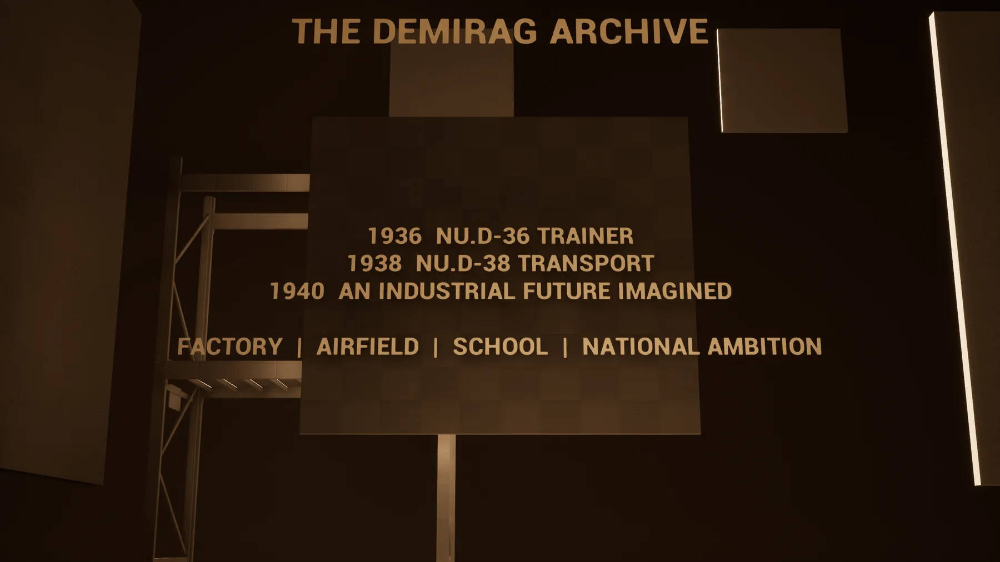
MevcutArşiv Köşesi ve Süreç Panosu
Deneyim içinde arşiv ve üretim tarihini mekânsal bir bilgi alanına dönüştüren Unreal sahnesi.
07
Referans Görseller ve Karakter Araştırmaları
Nuri Demirağ karakter araştırması, proje içindeki karakter briefi, arşiv referans görselleri ve kaynak model paketiyle belgelenmiştir.
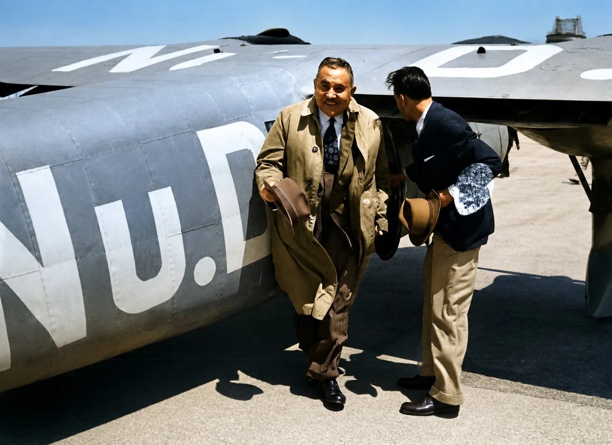
MevcutNuri Demirağ - Uçak Referansı
Pitch deck araştırma setinde bulunan karakter ve uçak ilişkisi görseli; karakter araştırmasının atmosfer ve duruş referansı olarak kullanılır.
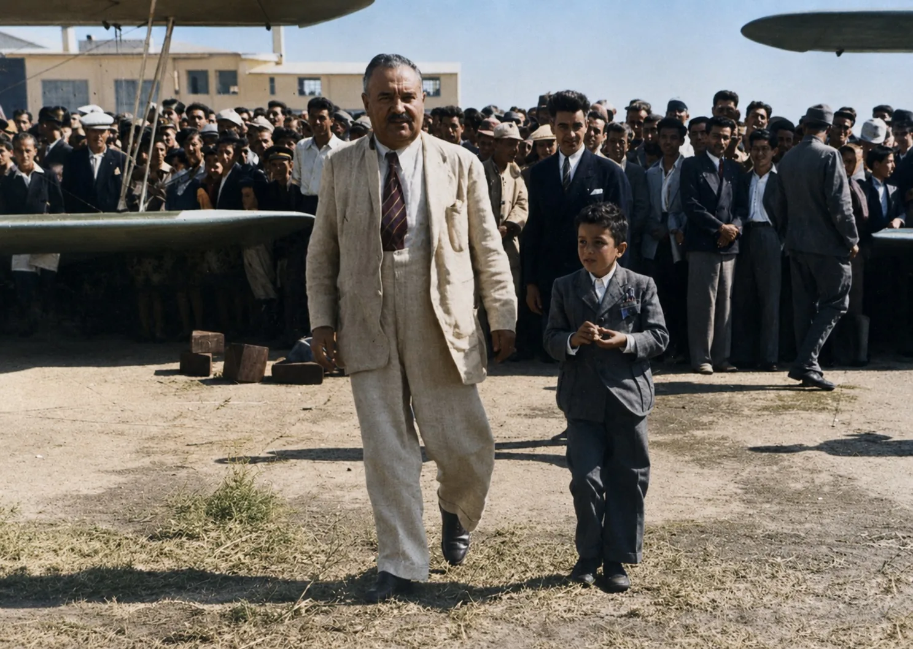
MevcutKurucu Figür ve Üretim Çevresi
Karakterin sahne içindeki rolünü, çevreyle ilişkisini ve üretim kültürü bağlamını tartışmak için kullanılan referans görsel.
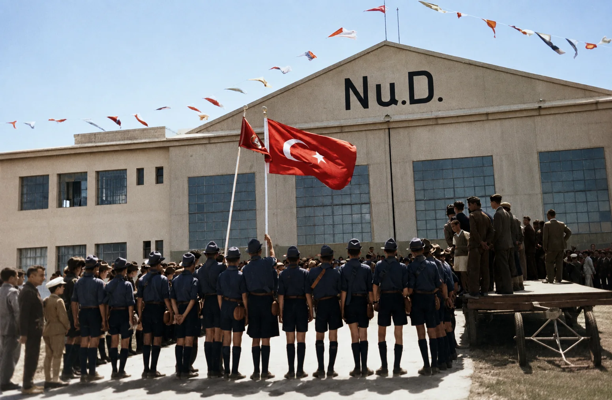
MevcutHangar ve Tören Görsel Araştırması
Nu.D hangarı, tören düzeni ve kalabalık atmosferi üzerine üretilmiş AI destekli görsel araştırma. Tarihsel fotoğraf olarak değil, sahne/doku referansı olarak kullanılır.
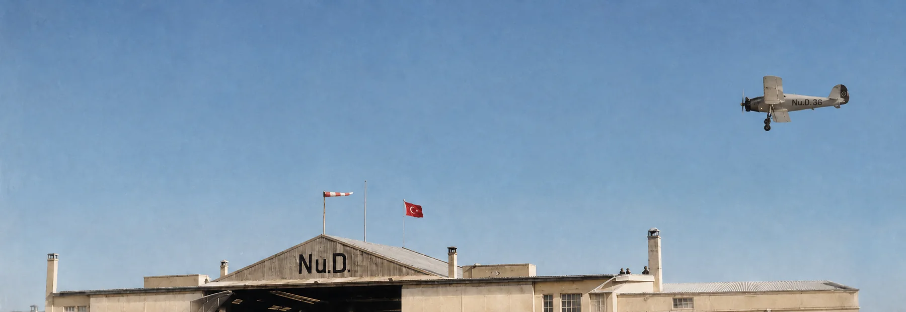
MevcutHangar ve Uçuş Görsel Araştırması
Nu.D hangarı, uçak silueti ve açık gökyüzü kompozisyonu üzerine üretilmiş AI destekli görsel dünya çalışması.
Nuri Demirağ Karakter Briefi
Nuri Demirağ karakter briefi, figürü tam NPC yerine sahne odağı, kurucu vizyon ve üretim iradesi taşıyıcısı olarak konumlandırır.
Nuri karakter briefi08
Araştırma Notları ve Senaryo
Zorunlu Belgeler alanını destekleyen seçili araştırma notları PDF olarak okunabilir biçimde sunulmuştur.